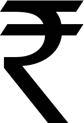

The Indian rupee symbol (₹) has a fascinating history, but has many myths surround its adoption, designing, early usage and for selection. Here’s the accurate timeline, clarifying what actually happened:
- Early 2009 – Designing the Symbol
– The ₹ symbol was designed by Dr. Udaya Kumar in early 2009.
– Myth busted: Some sources mistakenly claim the design was made in 2010. The actual design existed well before the official selection. Some say that the Rupee Symbol competiton of 2010, but the fact is that this competition was started and ended on 5 March 2009 and 15 April 2009, which lie in 2009 itself, only the result declaration was in 2010.
- 15 July 2010 – Selection as the Winner
– The symbol was officially selected as the winning design from among numerous entries.
– On this day, Finance Ministry officials announced:
“The symbol will be adopted in a span of six months in the country, and within 18 to 24 months globally, Soni said, adding that it will feature on computer keyboards and software for worldwide use.”
– Myth busted: Many assume that the symbol was officially adopted on 15 July 2010.
– Fact: Selection is different from adoption; the symbol was only chosen at this point.
- 11 October 2010 – Digital Adoption (Unicode 6.0 Release)
– At 9:30PM IST in India (9AM PT, where it was encoded), Unicode 6.0 was officially released, including the ₹ symbol with the code point U+20B9.
– Myth busted: Unicode inclusion does not equal official adoption in India. It enabled digital and software usage worldwide, preparing for future integration.
- 12 October 2010 – Real Adoption & Official Use
– The traditional “Rs.” was replaced with the newly encoded “₹” in government documents, banks, CBSE’s reprinted NCERT Books (when the stock finished), and utility bills.
– This marks the first real, practical adoption of the rupee symbol in India, making it legally recognized in official contexts.
– Myth busted: Selection or Unicode release dates are sometimes wrongly cited as the adoption date; the true adoption date is 12 October 2010.
- 8 July 2011 – Physical Currency (Coins)
– The symbol appeared for the first time on Indian coins.
– Myth busted: Many believe it appeared immediately on all currency from July 2010 itself; but it was first included on coins only and that in July 2011 not 2010, July 2010 is not even the adoption date. Later, in January 2012, ₹ was incorporated into banknotes as well.
- Kaun Banega Crorepati Season 4 and Early Rupee Symbol Usage – 11 October 2010 – KBC Season 4 Premiere:
– The show premiered at 9:10 PM IST, a few minutes before the Unicode release of the ₹ symbol.
– Initially, the logo still displayed four Rs instead of the ₹ symbol.
– After the first break of the premiere episode (around 9:30PM IST), the logo was updated to display six ₹ symbols. The logo on the wall also appeared for the first time.
Fun fact: Cheques signed by Amitabh Bachchan at the start of the season still used the traditional “Rs.” In front of the amount in numerals until many days, but by the end of the season, all cheques were signed with the ₹ symbol numerals.
– Comparison to France:
Similar to France’s quiz show “Qui Veut Gagner Des Millions?” in 2001. France was set to adopt the Euro in January 2002, which was announced in 2001, and the show began displaying and distributing prize amounts in euros in advance, including the Euro symbol, even before the official adoption, in late 2001. Similarly the rupee symbol was announced as the winner in July 2010 KBC Season 4 showcased it in advance, before it got adopted on 12 October 2010.
Summarising the dates:
- Design: Early 2009
- Winner Selected: 15 July 2010 (not adoption)
- Digital inclusion: 11 October 2010
- Official adoption in documents & public use: 12 October 2010
- Physical currency: 8 July 2011

Rupee symbol from 12 October 2010
© 2025 Niral Bhatt. All rights reserved.